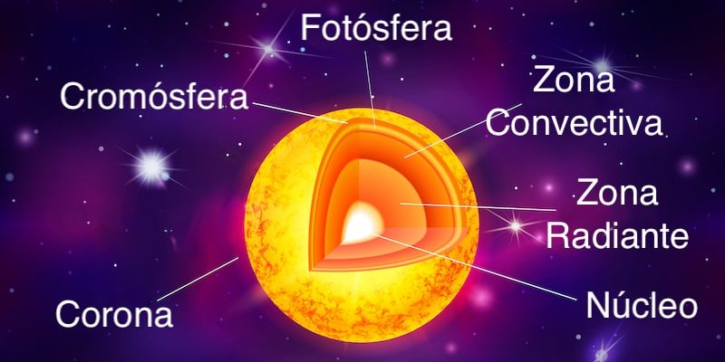

¿Qué son las estrellas?
Una estrella es una gran esfera de polvo y gas en el Universo que literalmente brilla con luz propia. Es un cuerpo celeste, un astro grande e incandescente que aparece en el cielo como un punto luminoso y que emite luz y calor.
El número de estrellas en el Universo no se conoce con exactitud, porque ni siquiera se conoce todo el Universo. No obstante, los científicos han identificado muchas de ellas y han hecho estimaciones sobre su abundancia. Para tener una idea, con un telescopio perfeccionado es posible observar más de 3 000 millones en el cielo visible.
La más cercana a la Tierra es la única del Sistema Solar, claro, el Sol, y las más cercanas a este son las que pertenecen al sistema Alfa Centauri, situado a 4,37 años luz.
Nuestra estrella
El Sol es la estrella más cercana al planeta Tierra, ubicada a 149,6 millones de kilómetros de distancia. Todos los planetas del Sistema Solar orbitan a su alrededor a distintas distancias, atraídos por su gigantesca gravedad, así como los cometas y asteroides que conocemos. Comúnmente se conoce al Sol con el nombre de Astro Rey.
Se trata de una estrella bastante común de nuestra galaxia, la Vía Láctea: no es ni muy grande ni muy pequeña en comparación con sus millones de hermanas. Científicamente, el Sol se clasifica como una estrella enana amarilla, del tipo G2.
Actualmente se halla en su secuencia principal de vida. Se encuentra en una región exterior de la galaxia, en uno de sus brazos espirales, a 26.000 años luz del centro galáctico.
Sin embargo, el tamaño del Sol es tal, que representa el 99% de toda la masa del Sistema Solar, equivalente a unas 743 veces la masa total de todos y cada uno los planetas combinados del mismo, y unas 330.000 veces la masa de nuestro planeta.
Su diámetro es de 1,4 millones de kilómetros, por lo que constituye el objeto más grande y más brillante del cielo terrestre. Por eso su presencia marca la diferencia entre el día y la noche.
Por demás, el Sol es una enorme bola de plasma, casi redonda. Está compuesto mayormente por hidrógeno (74,9%) y helio (23,8%), así como una pequeña porción (2%) de elementos más pesados como oxígeno, carbono, neón y hierro.
El hidrógeno es el combustible principal del Sol. Sin embargo, debido a la combustión se va convirtiendo en helio, dejando atrás una capa de “cenizas” de helio conforme la estrella avanza en su ciclo principal de vida.
El Sol es una estrella esférica, con un ligero achatamiento en sus polos, fruto de su movimiento de rotación. A pesar de ser una gigantesca y continua bomba atómica de fusión de átomos de hidrógeno, la enorme fuerza de gravedad que su masa le otorga compensa el empuje de la explosión interna, alcanzando así un equilibrio que permite la continuidad de su existencia.
Estructura del sol
El Sol se estructura en capas, más o menos como una cebolla. Estas capas son:
El núcleo: La región más interna del Sol, que ocupa una quinta parte del total de la estrella: unos 139.000 kilómetros de su radio total. Es allí en donde tiene lugar la gigantesca explosión atómica del hidrógeno fusionándose; pero es tal la gravedad que hay en el núcleo solar, que a la energía producida de esta forma le toma alrededor de un millón de años emerger hacia la superficie.
La zona radiante: Está compuesta de plasma, o sea, de gases como helio y/o hidrógeno ionizados, y es la región que permite la más fácil radiación de la energía hacia las capas de afuera, lo cual disminuye considerablemente la temperatura que se registra en este lugar.
La zona convectiva: Se trata de una región donde los gases dejan de estar ionizados, haciendo más difícil que la energía (en forma de fotones) escape hacia afuera del Sol. Esto ocasiona que la energía pueda escapar solamente por convección calórica, mucho más lentamente. Así, el fluido solar se calienta de manera desigual, originando dilataciones, pérdidas de densidad y corrientes ascendentes o descendentes, como una marea interior.
La fotósfera: La región del Sol donde se emite la luz visible, que se percibe como gránulos brillantes sobre una superficie más oscura, aunque se trata de una capa transparente de unos 100 a 200 km de profundidad. Es considerada la superficie de la estrella, y es donde aparecen las manchas solares.
La cromósfera: Se llama así a la capa externa de la propia fotósfera, mucho más translúcida todavía y difícil de apreciar, pues está opacada por el brillo de la capa anterior. Posee un tamaño de alrededor de 10.000 km y vista durante un eclipse, posee un tono rojizo exterior.
La corona solar: Se conoce así a las capas más tenues de la atmósfera externa del Sol, en las que la temperatura aumenta considerablemente respecto a las capas interiores. Esto es un misterio de la naturaleza solar. Sin embargo, en ella se dan bajas densidades de materia junto a intensos campos magnéticos, atravesados por energía y materia a elevadísimas velocidades, así como por numerosos rayos X.
